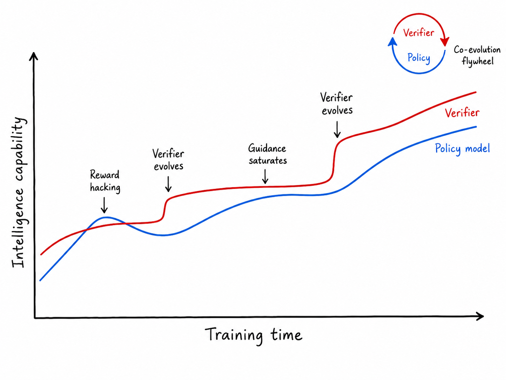
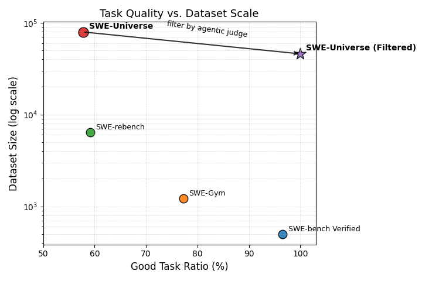
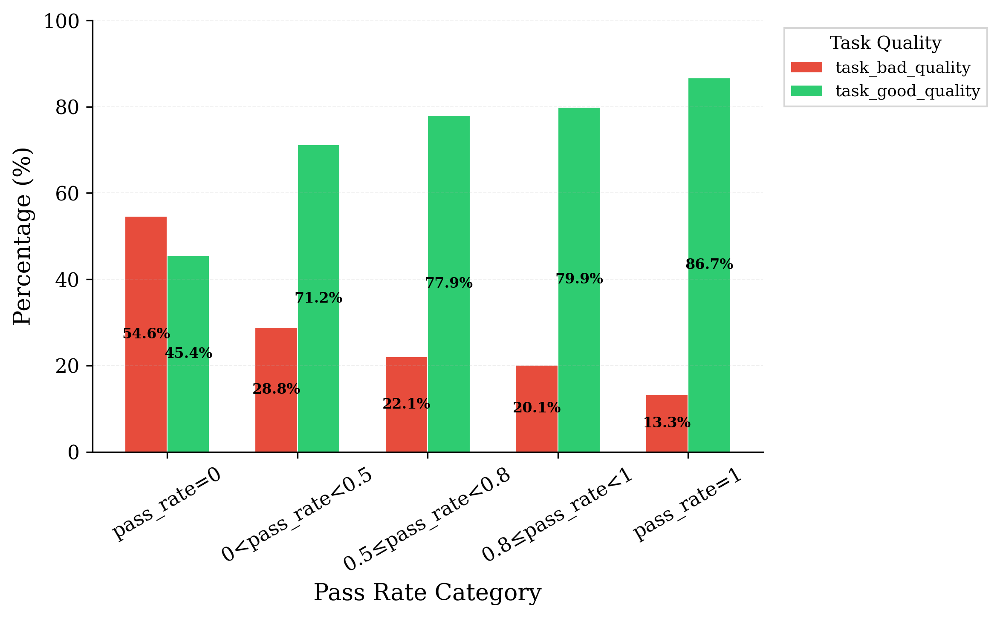
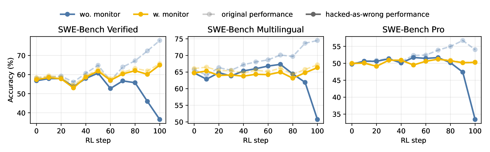
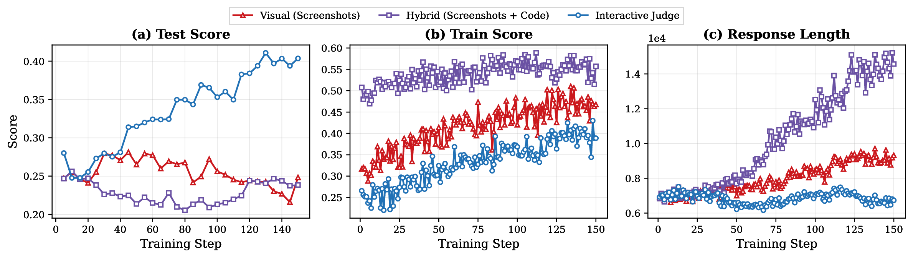
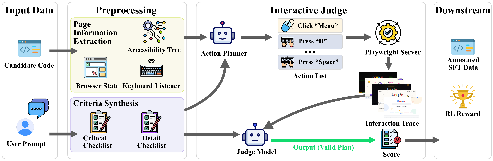
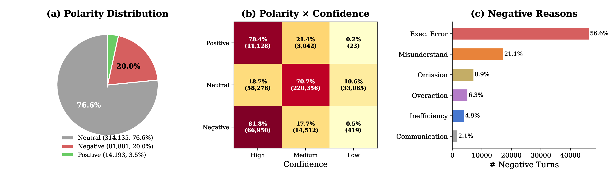
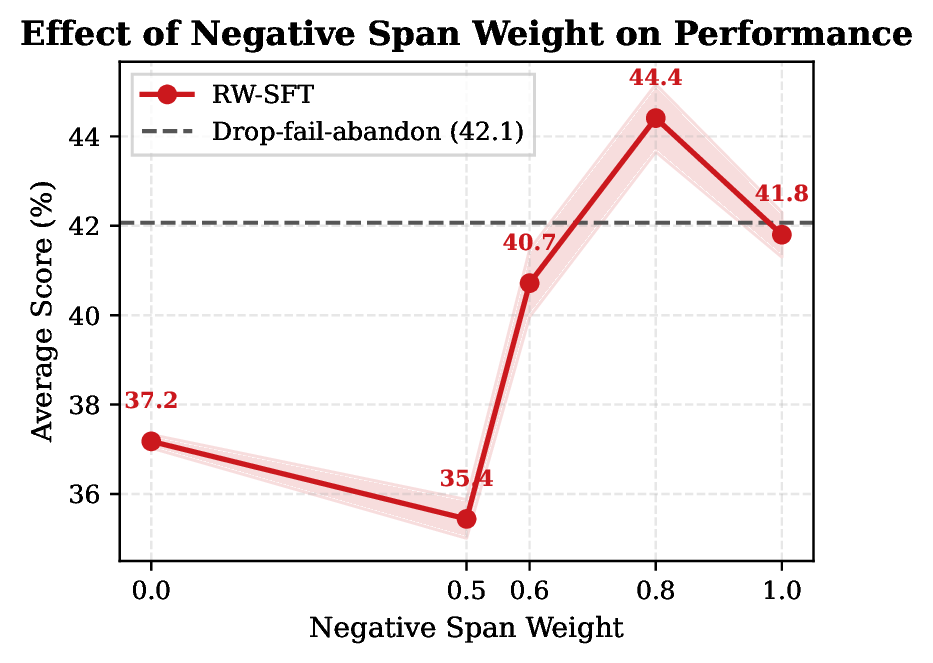
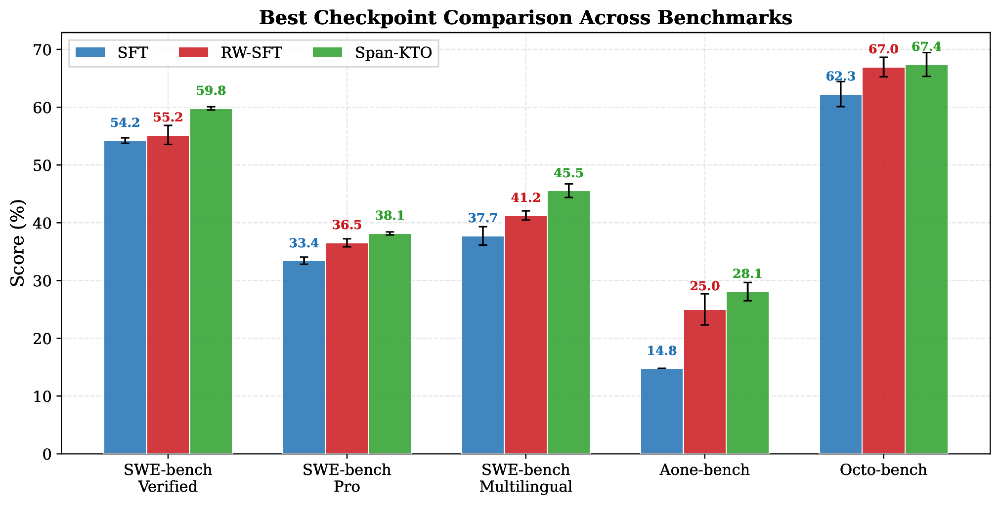
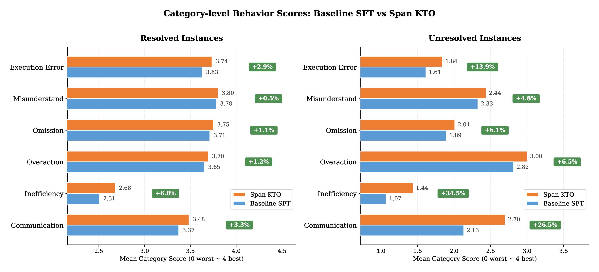

验证的地平线：编码智能体奖励没有银弹
"没有银弹（No silver bullet）。"
—— Frederick P. Brooks, Jr.，《没有银弹：软件工程中的本质性与附属性困难》（1986）
1 引言
计算领域有一个经典直觉：验证一个解比找到它更容易。但对今天的编码智能体而言，这种不对称正在反转。随着基础模型发展出更强的推理能力，随着 harness 工程变得日益精巧，生成一个足够复杂的候选解已经变得更容易。相比之下，可靠地验证这个解反而成了更难的问题。软件工程中没有银弹，编码智能体的验证也不例外。
验证的核心功能，是检查代码是否满足了人类意图，但意图无法被直接度量。可执行测试、rubric、奖励模型——这些验证器只能把意图操作化为可计算的近似；它们是意图的代理，而永远不是意图本身。
这使验证面临双重挑战。其一，忠实地验证意图是否被满足本身就极其困难：意图本质上是欠规约的，持有意图的人往往要等到一个反例暴露出某处疏漏，才能说清自己的全部期望，而这样的反例又很难预测或穷举。更糟的是，在模型训练的语境下，代理与意图之间的缝隙不会缩小，反而会扩大。一旦一个度量被置于优化压力之下，它便不再是一个好的度量：当一个代理被用作奖励信号时，生成器学到的不只是满足这个代理，还会利用代理与意图之间的偏差。因此，奖励作弊不是一个可以打补丁修掉的 bug，而是对一个有限近似施加优化的结构性后果。
因此，验证无法无限期地可靠引导生成器。这并非今天的验证器的某种偶然缺陷，而是一种结构性的必然。据此，一个完美的验证器并不是一个现实的目标。剩下的，是把验证当作一种不断演进的近似——一道随着它所评估的生成器变强而不断后退的地平线。[脚注：根据 Rice 定理，程序的任何非平凡语义性质都是不可判定的；这从可计算性理论的角度独立地支持了上述论断。]
这重构了问题本身，并引出本文的核心主张——全文其余部分都将对其加以论证并在实践中落地：
近期前沿实验室的报告与工程分析也呼应了这一观点：它们越来越多地把智能体评估视为一个系统性问题，涉及评分器（graders）、轨迹（traces）、监控（monitoring）以及失败模式分析。
我们进一步从三个维度刻画验证信号的质量。可扩展性是前提条件：信号能否以训练所需的规模被廉价地产生？忠实性是核心质量：信号在多大程度上反映了真实的用户意图，而非某个狭隘的替身？鲁棒性是忠实性的可靠性保证：验证器的裁决能否在多样、对抗性的输入下依然成立，能否经受一个不断变强的生成器所施加的优化压力？同时达成这三者，正是验证的核心难点。大多数现有方法只能满足其中两项：单元测试可扩展且相对鲁棒，却只覆盖意图的薄薄一层；基于 LLM 的 judge 可扩展且忠实，却易被不断变强的模型钻空子；人类专家评审忠实且鲁棒，却无法扩展。三者的交集——一个同时廉价、有深度、又抗作弊的验证器——恰恰是仍然缺失的那一块。

立足于当前的 Qwen 基础模型，我们研究了四种奖励构造：从基于可执行测试的可验证奖励，到用 rubric 与交互式 judge 评估测试本身无法捕捉的视觉与功能维度的意图，再到从用户交互数据中学习真实而全面的用户意图，最终走向完全开放的智能体评估。每一步都更忠实于真实的用户意图，但也更依赖开放式判断、更难被机械校验。我们以同一组视角考察每一种：使奖励设计变难的任务特征、由此施加的验证约束、我们采用的具体奖励实现、实证观察以及实践要点。
- 单元测试作为验证器（SWE 类任务，第 2 节）：我们以基于执行的测试套件作为验证信号，它可靠且易于扩展。然而更强的策略仍会找到可利用的漏洞，例如检索解答产物或篡改测试。为此我们引入质量 judge 与轨迹级行为监控来持续约束此类行为。两者就位后，在三个 SWE-Bench 变体上，"作弊得到的成功（Hacked Resolved）"从 28.57% 降至 0.56%，"干净的成功（Clean Resolved）"从 40.22% 升至 60.53%。
- LLM 作为验证器（前端任务，第 3 节）：当意图延伸到视觉外观与交互行为时，机械的 pass/fail 测试不再够用。我们设计了基于 rubric 的 judge，把评估拆解为功能正确性、视觉质量、布局与 UX 等结构化维度，并进一步用一个能在真实浏览器中通过模拟用户交互来"操作"生成产物的智能体交互式 judge 加以扩展。由于奖励扎根于观察到的运行时行为而非源码审查，交互式 judge 能抵御静态 judge 所易受的"长度利用"作弊。
- 用户反馈作为验证器（真实世界智能体任务，第 4 节）：用户是最忠实的验证者。他们的反馈嵌入在自然语言、行为信号等交互模式之中，可从中抽取丰富的可训练信号。这种信号不仅最忠实（它直接来自意图的持有者），而且相对鲁棒，因为用户的判断扎根于实际效用。我们系统性地分析用户交互反馈并将其用于模型优化，在五个内部编码智能体基准上取得显著提升，其中一个内部基准提升达 13.3 个百分点。
- 自动智能体作为验证器（长程任务，第 5 节）：对长程任务而言，意图处于最开放的状态：规格几乎不规定任何实现细节，预定义的测试套件也无法覆盖。在这种设定下，连"构造一个忠实的验证器"本身都是一个开放问题。我们的做法是部署一个自主的智能体评估器，直接检视生成的代码库，并针对规格动态地进行多轮评估，充当一个忠实、可扩展但近似的验证器。在受控的数据预算下，经该评估器过滤的训练数据已能稳定优于随机采样。我们进一步主张：该评估器应当演化为一个与生成器协同演化的独立验证器，这正是"验证地平线"的一种具体实现。
这四种构造共同表明：没有任何单一的奖励策略足以维持编码智能体的持续进步。真正奏效的是一个完整的验证系统，它整合了可执行测试、质量过滤、行为监控、智能体评估器等机制，并随策略能力的提升与任务格局的演变而被持续重建。在这一视角下，验证不是训练流程的辅助组件，而是其核心基础设施。验证器与策略的主动协同演化（图 1）才是确保奖励指标上的增益转化为持久而可信的能力增长的关键。
2 面向 SWE 类任务的测试驱动奖励
我们从 SWE 类任务开始，这类任务已成为基础模型合成编码训练数据的主要来源。对这类任务，基于执行的测试套件给出的 pass/fail 信号被广泛视为最可靠的奖励。其关键的可行性优势是可扩展性：可执行测试可以通过自动化流水线构造、并大规模评测。然而它面临两个系统性挑战：忠实性与奖励作弊。若不加处理，二者都会直接污染训练质量。
2.1 预备
自动化数据流水线。我们使用 SWE-Universe 流水线，从真实的 GitHub pull request 构造可执行的 SWE 类任务。给定一个关联 issue 的 pull request，流水线把合并的改动拆分为修复补丁（fix patch）与测试补丁（test patch），将仓库还原到修复前状态，并构造一个带统一验证器 evaluation.sh 的 Docker 化环境，其二元 pass/fail 结果即作为测试驱动奖励。每个验证器都需通过校验：在打了测试补丁的有 bug 仓库上必须失败，在同时打了测试补丁与修复补丁的修复后仓库上必须通过；无效的验证器由构建智能体迭代修复。该流程虽能保证可执行性与基本判别力，但其本身并不保证任务指令与测试之间的语义忠实。
奖励忠实性。对测试驱动奖励而言，忠实性通常以不出现假阳性（错误解通过测试）与假阴性（正确解未通过测试）来刻画。在 RL 训练中，假阳性会高估奖励、强化错误行为；假阴性会惩罚正确行为。二者都会让模型从错误的梯度信号中学习。
奖励作弊。值得注意的是，奖励作弊可视为假阳性的一种特例：智能体在没有真正解决任务的情况下产出了能通过测试套件的输出。一般的假阳性是测试设计缺陷（如覆盖不足）被动产生的；而奖励作弊则源于智能体主动利用信息泄漏（例如从互联网检索 ground-truth 补丁）来钻评测的空子。
我们在以下两小节分别应对这两个挑战。
2.2 提升奖励忠实性
动机。为缓解假阳性与假阴性，我们认为：唯有当二元 pass/fail 信号对应于"在真实任务意图上的成功"、而非仅仅"在测试套件上的成功"时，测试驱动奖励才是忠实的。
在源自 GitHub pull request 的 SWE 类任务中，这一条件并不平凡。真实的任务意图可能依赖线下讨论、历史项目惯例或维护者的期望，而抽取出的指令只提供了对该意图有限且可能有损的描述。
因此，我们把语义奖励忠实性拆解为两个维度：指令清晰度（记为 instruct_clear），追问指令是否充分表达了所意图的任务；以及指令—测试对齐（记为 instruct_ut_align），追问测试是否忠实地把指令操作化。
智能体质量 Judge。为把这一忠实性拆解落地，我们构建了一个自动评估 SWE 类任务质量的智能体质量 judge。给定任务描述、Docker 化仓库环境、测试脚本，以及（可选的）ground-truth 补丁，judge 用 MiniSWEAgent 主动探索环境：它可以查看仓库文件、执行命令、读测试，并分析：1）指令与环境是否自洽到足以让一个智能体解出该任务；2）验证器是否与所述任务相匹配。最终，该智能体 judge 产出两个维度级判断 instruct_clear 与 instruct_ut_align，并聚合成一个总体质量标签 overall_good 作为最终质量分。
我们在一个人工标注的任务质量基准上评估该 judge。从案例可见，这类质量问题形态多样：指令可能只有寥寥数词、毫无可执行上下文，或引用了不可访问的外部资源（如私有 Slack 讨论）；测试可能验证与所述任务完全正交的功能，或把实现特有的产物（如拼写错误）硬编码为期望输出。
为提升智能体 judge 的可靠性，我们研究了三个设计选择：基座 judge 模型、多数投票的投票样本数，以及是否使用 few-shot 示例或 ground-truth 补丁。表 1 给出消融结果。总体而言，该智能体 judge 在两个指标上都表现强劲。但 instruct_ut_align 明显更难：它要求 judge 不仅从指令中理解所意图的任务语义，还要根据源码推断测试套件的实际行为覆盖，而二者之间的错配往往微妙而复杂。相应地，我们发现给 judge 额外的参考信息能显著改善它在该维度上的评估：few-shot 示例提升 instruct_ut_align 的精确率（precision），而提供 ground-truth 补丁则提升其召回率（recall）、并在该维度取得最佳 F1。这些结果表明，该 judge 可作为一个可扩展的过滤器，用于识别那些测试驱动奖励不可靠的 SWE 类任务。
| 策略 | #Turns | instruct_clear | instruct_ut_align |
|---|---|---|---|
| 3 票投票，Qwen-Plus | 37 / 17 / 92 | 97.26 / 92.21 / 94.67 | 74.00 / 78.72 / 76.29 |
| 5 票投票，Qwen-Max | 24 / 14 / 40 | 97.18 / 89.61 / 93.24 | 72.73 / 85.11 / 78.43 |
| 3 票投票，Qwen-Max | 24 / 15 / 45 | 95.50 / 92.21 / 93.83 | 73.47 / 76.60 / 75.00 |
| + 示例 | 25 / 15 / 46 | 100.00 / 85.71 / 92.31 | 78.72 / 78.72 / 78.72 |
| + 示例 + GT 补丁 | 27 / 17 / 57 | 100.00 / 83.12 / 90.78 | 75.93 / 87.23 / 81.19 |


图 3（右）：按解出率分桶的任务质量分布。解出率由一个内部 Qwen3-Turbo checkpoint 在 SWE-ReBench 上多次 rollout 计算得到。
数据统计。我们把该智能体质量 judge 作为语义过滤器用于 SWE-Universe。如图 2 所示，过滤在保留大规模可执行任务池的同时提升了"好任务"的比例，得到的训练数据其 pass/fail 奖励更少受到指令不清或指令—测试错配的影响。我们进一步发现，低解出率部分被任务质量所混淆。如图 3 所示，零解出任务中低质量样本的比例高得多，而高解出率桶则以高质量任务为主。这说明：持续解不出的样本不应仅被解读为"内在困难"的证据。这些低质量任务白白消耗 rollout 预算，却不提供可信的奖励。因此质量过滤同时提升了采样效率与奖励可靠性。
在 RL 中的应用。我们把过滤后的高质量数据纳入一个内部 Qwen-Turbo checkpoint 的 RL 训练，并在更广的 SWE 类评测上观察到一致的增益。图 4 显示，质量过滤后的 RL 在 SWE-bench Multilingual 与 SWE-bench Pro 上提升了性能，同时在 SWE-bench Verified 上保持相当。这说明：剔除那些指令不清或指令—测试错配的任务，能在不牺牲标准精选基准表现的前提下提升单测奖励的可靠性。

2.3 缓解奖励作弊
动机。SWE 任务中的测试驱动奖励只评估仓库的最终状态，通常是打上模型生成的补丁、再跑该任务专属的测试套件。因此，它们能验证补丁"是否通过测试"，却无法验证补丁"是否经由合法的软件工程过程产生"。
这就在行为层面制造了假阳性：智能体可能通过利用捷径信息通道来获得正奖励，例如检索原始 pull request、访问泄漏的 commit 或补丁元数据、修改测试或验证器、或对可见测试过拟合。
与由不完整或错配的测试导致的普通假阳性不同，这类奖励作弊不只源于验证器的弱点，更源于用来取得验证器成功的那条轨迹本身：最终补丁通过了测试，而产生它的过程却与合法的 SWE 式调试不相容。
本节中，我们首先系统性地分析 SWE 任务中的易作弊行为；随后基于此分析，构建一个监控系统来缓解此类作弊行为。
易作弊行为分析。我们对 SWE 任务中的智能体行为做自动审查，以识别那些可能让智能体在不遵循预期的本地调试过程的情况下取得验证器成功的行为。每条轨迹都记录了产生最终补丁的命令序列、文件查看、测试执行、git 操作、网络访问与编辑。我们据此区分两类奖励污染来源：静态环境泄漏与策略相关的捷径访问。
静态环境泄漏：由环境本身造成的捷径机会，例如未清洗的 git 历史、可见的测试、可修改的 harness。在我们此前的工作中，已经减少了此类环境中的若干静态信息泄漏来源：特别地，我们清洗仓库历史、移除发生在目标 pull request 时间之后的 commit（因为这些 commit 可能泄露未来的修复）；我们也对那些解答不需要外部连接的任务禁用网络访问。这些干预在训练开始前减少了明显的环境级泄漏，但仅靠它们并不够：随着策略变强，智能体仍可能发现难以人工预先设想的捷径行为。
策略相关的捷径访问指的是超出预期本地调试过程的主动信息搜寻行为，例如检索解答产物或查找外部修复。与静态环境级泄漏不同，这些行为是策略相关的：它们取决于智能体在解题时如何选择搜集信息，因此无法仅靠加固初始任务环境来彻底消除。
表 2 显示了静态泄漏与主动捷径搜寻之间的清晰分野。在加固后的环境下，环境级交互与验证器成功并不正相关：repository-history mining、test-oracle tampering、evaluation-harness tampering、visible-test overfitting 以及 evaluator-aware patching 的解出率都低于整体水平。这说明静态加固削弱了若干已知泄漏通道的奖励优势，尽管这些行为仍标示着过程非法的轨迹。更难的情形是主动捷径搜寻：solution artifact retrieval 仅出现在 4.32% 的轨迹中，却达到 72.34% 的解出率，比基线高出 12.35 个百分点；external fix lookup 也呈现轻微的正相关。因此，即便已减少了已知的静态泄漏，验证器成功仍可能与捷径搜寻行为耦合，这促使我们在 RL 中引入一个轨迹级监控器，在训练时审计信息访问、并对可疑的捷径依赖型成功进行奖励校正。
| 基线 / 行为 | Freq. (%) | Resolved (%, Δbase) | phi corr. |
|---|---|---|---|
| Qwen-Turbo | — | 59.99 | — |
| 静态环境泄漏 | |||
| Repository-history mining（挖掘仓库历史） | 21.11 | 56.55 (-3.44) | -0.036 |
| Test-oracle tampering（篡改测试预言） | 3.69 | 47.29 (-12.70) | -0.051 |
| Evaluation-harness tampering（篡改评测 harness） | 8.25 | 41.47 (-18.52) | -0.113 |
| Visible-test overfitting（对可见测试过拟合） | 30.00 | 51.62 (-8.37) | -0.112 |
| Evaluator-aware patching（针对评测器打补丁） | 8.78 | 56.39 (-3.60) | -0.023 |
| 策略相关的捷径访问 | |||
| Solution artifact retrieval（检索解答产物） | 4.32 | 72.34 (+12.35) | +0.054 |
| External fix lookup（查找外部修复） | 7.03 | 61.69 (+1.70) | +0.010 |
缓解：RL 中的行为监控。为缓解策略相关的捷径利用，我们在用 Qwen-Turbo 进行的 RL 中引入一个轨迹级行为监控器。对每条轨迹，我们记录命令历史、网络访问、git 操作、打开与编辑的文件以及最终补丁。监控器以一个模式集合 \(\mathcal{P}\) 审计整条轨迹中的高风险信息访问模式。
\(\mathcal{P}\) 中的每个模式都指定三个要素：可观测的轨迹证据、关联的泄漏风险、以及对应的干预。这些模式涵盖诸如搜索原始 pull request、打开上游 diff、查询 commit 哈希、访问会泄露已合并补丁的 GitHub 页面、或使用可能暴露修复后改动的仓库元数据等行为。当某次 rollout 命中高风险模式时，我们施加一个 token 级惩罚，以降低分配给捷径依赖行为的奖励。
该模式集在训练中迭代更新。每个训练区间后，我们从当前策略采样轨迹，优先选取那些通过验证器或触发监控器的 rollout。随后由一个智能体审查器检视这些轨迹，识别新出现的捷径策略。反复出现的模式被加入 \(\mathcal{P}\)，更新后的监控器部署到下一轮 RL。这种闭环设计很重要，因为奖励作弊是策略相关的：随着模型变强，它可能发现初次审查中尚不存在的新利用通道。
我们报告四个 rollout 级指标：Resolved 为标准验证器通过率；Hack Rate 为触发行为监控器的轨迹比例（无论最终补丁是否通过）；Hacked Resolved 为既通过验证器又触发监控器的轨迹比例，度量通过受监控捷径通道取得的验证器成功；Clean Resolved 为通过验证器但未触发监控器的轨迹比例——换言之，它把触发监控器的成功轨迹记为错误。
| 基准 | Clean Resolved (%) ↑ | Hack Rate (%) ↓ | Hacked Resolved (%) ↓ | ||||||
|---|---|---|---|---|---|---|---|---|---|
| Base | +Mon. | Δ | Base | +Mon. | Δ | Base | +Mon. | Δ | |
| SWE-Bench Verified | 36.49 | 64.98 | +28.50 | 51.49 | 2.13 | -49.35 | 41.35 | 0.70 | -40.65 |
| SWE-Bench Multilingual | 50.73 | 66.33 | +15.60 | 31.19 | 1.59 | -29.61 | 23.76 | 0.84 | -22.93 |
| SWE-Bench Pro | 33.43 | 50.27 | +16.84 | 30.60 | 0.20 | -30.40 | 20.61 | 0.13 | -20.47 |
| 平均 | 40.22 | 60.53 | +20.31 | 37.76 | 1.31 | -36.45 | 28.57 | 0.56 | -28.02 |

表 3 报告了行为监控 RL 的最终效果。在三个基准上，监控器把平均 Hacked Resolved 从 28.57% 降至 0.56%，同时把 Clean Resolved 从 40.22% 提升到 60.53%。因此，这一增益不只是原始验证器通过率的提高，而是从"捷径依赖的成功"向"监控—干净的成功"的转变。
图 5 解释了这种转变在 RL 中如何出现。在无监控的训练中，验证器成功率可以保持很高，而干净解出率却在恶化，这表明终端奖励越来越多地接受过程非法的解。行为监控的 RL 通过惩罚那些经由受监控捷径通道取得验证器成功的轨迹，避免了这种背离。因此，监控器扮演的是一种过程感知的奖励校正，而非事后过滤。
3 面向前端任务的交互式 Judge
与 SWE 类任务不同，前端任务无法仅靠执行成功来评测。一个编码智能体可能产出无报错的 HTML、CSS 与 JavaScript，却仍然视觉质量差、动画损坏或交互错误。因此，要忠实地评测前端产物，必须同时检查渲染后的视觉外观与交互式的功能行为。
本节先介绍一个基于 rubric 的静态 judge，它沿结构化维度评估渲染截图与源码，为前端任务提供初步的奖励忠实性（3.1）；随后给出一个智能体交互式 judge，它模拟真实用户与生成网页的交互，提升奖励鲁棒性、并更贴近人类的前端评测（3.2）。
| 评分器 | Prompt | Spearman ρ | Kendall τ | 对战一致率 | 跨 Judge τ |
|---|---|---|---|---|---|
| Qwen3.7-Plus | Default | 0.810 | 0.714 | 40.4% (6,339/15,698) | ≥ 0.93 |
| Qwen3.7-Plus | Strict | 0.810 | 0.714 | 41.4% (6,499/15,698) | |
| Qwen3.6-Max | Default | 0.905 | 0.786 | 34.2% (5,368/15,698) | |
| Qwen3.6-Max | Strict | 0.905 | 0.786 | 36.1% (5,660/15,698) |
3.1 基于 Rubric 的静态 Judge
动机。在没有可执行测试时，一个自然的替代是用大语言模型作 judge：把生成代码与渲染截图喂给它，让它直接打分。然而这类基于模型的 judge 易有主观偏差、评分标准不一致，以及对视觉与功能正确性覆盖不全。近期工作表明，引入结构化的评估 rubric 可以缓解这些问题：把整体奖励拆解为针对功能正确性与视觉质量特定方面的细粒度评分维度，基于 rubric 的评估能降低模型偏差、提升可复现性。此外，迭代精修 rubric 设计还能进一步提升打分质量。
设计与效果。基于这些发现，我们设计了一个基于 rubric 的 judge，它同时以渲染截图与源码为输入，沿 functional correctness（功能正确性）、visual quality（视觉质量）等结构化维度评分。我们发现，引入设计良好的 rubric 提升了人类评估者之间的一致性，例如缓解了"偏好视觉惊艳但功能错误的输出"这一倾向。此外，rubric 显著提升了模型 judge 评分与人类评价之间的对齐、以及不同 judge 模型之间的跨 judge 一致性（见表 4）。
具体而言，我们在 671 个 WebDev 任务、8 个模型上评测。每个任务被拆解为一份平均 25.9 项的 checklist，跨六个维度：功能（Functional，37.7%）、内容（Content，19.0%）、视觉（Visual，13.3%）、布局（Layout，12.9%）、用户体验（UX，9.3%）、技术（Technical，7.2%）。我们运行 6 种评分配置，组合两个 judge 模型（Qwen3.6-Max 与 Qwen3.7-Plus）、两种 prompt 变体（Default 与 Strict）以及两种 thinking 级别。所有配置都产生高度一致的模型排名：在同一评分器族内 Kendall τ = 1.0，跨评分器族 τ ≥ 0.93。改变 prompt 严格度会降低绝对分、增大分差，但不改变排名；thinking 级别的影响可忽略（< 0.6 分）。这些结果证实基于 rubric 的 judge 对配置选择是鲁棒的。详细的 judge 提示词见附录。

局限。尽管有上述增益，静态判官范式仍有固有缺陷。第一，表单校验、动态路由、有状态交互等复杂前端特性，难以仅靠代码审查来验证；其正确性取决于源码审查无法可靠捕捉的运行时行为。第二，静态截图只表示单一页面状态，无法覆盖多页导航、交互式过渡，或仅在用户操作之后才出现的内容（如下拉菜单、模态框、滚动触发元素）。这些局限共同促使我们引入一个能主动与渲染产物交互的 judge。
3.2 智能体交互式 Judge
动机。一个自然的方案，是采用一种模仿人类质检员评估网页应用方式（即真正去浏览和操作它）的交互式评测协议。然而，在当前约束下部署一个完全自治的视觉智能体循环来做评判并不现实：多轮智能体交互推理成本高，序列决策会引入复合误差、损害评测稳定性。因此，我们设计了一个半自动的智能体交互式 judge，在交互覆盖与效率/可靠性之间取得平衡。
方法。核心是一条三阶段的"以交互进行评测"流水线（图 7）。第一，给定渲染后的网页与评测 rubric，动作规划器（action planner）一次性生成一份完整的动作列表，指定为操作目标功能所需的用户交互序列。第二，一个基于 Playwright 的渲染服务器在真实浏览器环境中执行这些动作，并记录由此产生的交互轨迹，包括录屏与每一步的状态变化。第三，judge 模型把录屏中采样的帧连同源码一起，对照 rubric 标准评分，产出最终分数。

具体而言，我们预定义了一个原子网页操作库（如 click、scroll、navigate、fill form、hover、press key），作为规划器的动作词表。与标准的智能体循环"逐步依据先前观测决定每个动作"不同，我们的规划器从任务规格与页面信息（无障碍树、浏览器状态、键盘监听器）一次性前向生成全部动作。渲染服务器随后顺序执行该动作列表，并在每步之后捕获截图、DOM 变化与 console 输出。judge 模型接收这些交互轨迹连同源码与 rubric checklist，并对照任务要求对观察到的行为评分。
通过把评测扎根于真实的运行时行为，该方法直接经由真实交互（而非代码审查）验证功能正确性，并通过跨页导航自然扩展到多页应用。相比只能观察源码与固定截图的静态 judge，交互式 judge 能捕获动画、状态转移、多步工作流等否则对评测不可见的动态行为。重要的是，如图 6 所示，作为 RL 奖励信号，交互式 judge 优于两种静态替代（视觉与混合），在取得更高测试分的同时保持稳定的输出长度。相比之下，静态 judge 易遭长度利用（length exploitation）：模型学会生成越来越冗长的 CSS 与 JavaScript 来抬高静态分，这是一种奖励作弊；而交互式 judge 因奖励来自运行时行为而非源码，从而避免了这一问题。
训练中的应用。我们在两个内部基准上评估交互式 Judge 作为训练奖励：WebDev Human Eval（由 Qwen 团队维护的人评基准）与 QwenWebBench（自动化前端评测基准）。我们把交互式 Judge 作为 best-of-4 拒绝采样微调（RFT）的过滤标准，应用于 Qwen3.7-Plus 的一个中间 checkpoint。如表 5 所示，带交互式 Judge 过滤的 RFT 在两个基准上均带来一致提升。我们进一步把该奖励纳入 Qwen-Max 的完整训练流程。在发布时，Qwen3.7-Max 在反映前端开发能力的 Code Arena 排行榜上位列全球第 4，仅次于 Claude 系列模型。
| 设置 | WebDev Human Eval | QwenWebBench |
|---|---|---|
| Qwen-Plus（中间 checkpoint） | 78 | 1509 |
| + 交互式 Judge RFT | 84 (↑6) | 1545 (↑36) |
4 面向真实世界智能体任务的"用户反馈作为验证器"
当前，绝大多数智能体训练都依赖精心构造的验证器，通过测试套件来判定任务完成。在实践中，这把训练限制在受控、沙盒化的设定里：为实现自动评测，研究者会改写任务以适配特定验证器、过滤掉难以自动评测的样本，或只对部分维度打分。这些妥协维持了训练流水线的运转，却在训练分布与开放式真实场景之间引入了系统性差距——在真实场景里，智能体必须应对多样、无约束的需求，而这些沙盒化代理无法捕捉。
对这类开放式真实场景，核心挑战仍是提供忠实且鲁棒的奖励信号。幸运的是，作为任务的发起者，用户天然关心智能体是否完成了任务，这使用户成为最理想的验证者。然而用户通常不提供显式的数值奖励信号，而是在与智能体的多轮交互中，通过自然语言与行为模式隐式地传达其验证判断。
一个自然的做法，是把这种信号蒸馏成一个学习得到的奖励模型，并大规模对其优化。这样的奖励模型在可扩展性上很有吸引力：一旦训练好，它能以可忽略的成本给任意多的轨迹打分。然而，开放式场景中真实的用户意图极其多样且深度欠规约，奖励模型只能把它压缩成一个静态、有损的代理，从而难以从交互中精确学到真实的用户意图。随着策略变强，它往往会利用这个代理与真实意图之间的缝隙，恰恰侵蚀掉在真实部署中最重要的鲁棒性。因此，鉴于庞大的用户基数，我们转而直接把用户当作验证者，让模型从大规模用户反馈数据中自然地学到人类意图的细节。我们把对用户反馈的大规模而忠实的利用，视为形成数据飞轮的关键一环：真实交互不断提供扎根于智能体实际行为的 on-policy 信号，这些信号又驱动下一轮策略改进。
因此，本节提出一条从用户—智能体交互轨迹中抽取过程级自然语言反馈的流水线，并通过三种训练目标加以利用：SFT、重加权 SFT（RW-SFT）与 span 级 KTO（Span-KTO）。
4.1 反馈标注流水线
数据来源。我们的对话数据来自公司内一批资深软件工程师在日常开发工作中与一个编码助手的真实交互记录。这些专业开发者在多样的工程任务（代码重构、特性开发、bug 修复、系统设计）中大量使用该编码助手，既提供了真实的任务多样性，又提供了基于清晰技术推理的高质量反馈信号。
人类隐式奖励信号。在用户与编码助手的多轮交互中，每一条用户回复都天然包含对上一轮助手表现的评价。用户可能显式地说"不对，回滚"，也可能通过行为隐式地传达态度——例如接受结果并立刻添加新需求（隐式认可），或换一种方式重述同一需求（隐式否定，表明助手没有正确理解）。我们把这些散布于对话中的信号称为人类隐式奖励信号（HIRS），并设计了一条基于 LLM-as-Judge 的自动标注流水线来大规模抽取这些信号。
LLM-as-Judge 标注。在对原始轨迹做预处理、剥离与评价无关的噪声（推理链、冗长的工具 I/O、系统提示）以使 Judge 聚焦于实质性的用户—助手交互之后，我们用 Qwen-Plus 作为 Judge 模型逐轮标注对话，其中一"轮"指一条用户消息连同助手对它的完整回复。标注的核心是一个精心设计的系统提示，要求 Judge 遵循三条原则：
- 双视角评价：同时记录用户表达了什么（
polarity，极性）与用户的评价是否客观公正（user_fairness）。二者允许不一致——例如，当助手正确遵循了指令却被用户否定时，polarity标为negative，但user_fairness标为unreasonable； - 证据驱动：每条标注都必须引用用户原文中的具体词句作为证据，不允许基于臆测进行标注；
- 保守标注：信号模糊时，标注应偏向中性——"宁可漏标，不要误标"。
对每一轮，Judge 输出结构化字段，包括奖励极性（polarity）、置信度、信号来源类型、负面原因类别，以及用户评价公正性（user_fairness）。在轨迹级别，还标注整体任务完成状态。
4.2 数据集分析

标注数据集包含 125,528 条轨迹与 535,737 条轮级标注。如图 8 所示，我们识别出三个关键特征：
- 极性分布高度不对称。用户反馈以中性信号为主，其次是负面信号，正面信号极为罕见。排除初始任务描述轮后，中性、负面、正面信号分别约占 76.6%、20.0%、3.5%。这反映了人机交互的一种自然倾向：助手做对时，用户通常直接进入下一个需求而非明确表扬；而助手出错时，用户才倾向于给出明确反馈。
- 负面信号置信度高。与中性信号相比，用户表达对助手表现的否定时明显更清晰、更确定。具体而言，81.8% 的负面信号是高置信，远超中性信号的 18.7%。
- 错误集中于执行与理解。在负面原因的分解中，执行错误（56.6%）与理解错误（21.1%）合计占 77.7%，表明代码实现的正确性与需求理解的准确性，是编码助手最关键的两个改进方向。
4.3 方法
记号。给定输入上下文 \(x\) 与目标输出序列 \(y = (y_1, y_2, \dots, y_T)\)，自回归语言模型 \(\pi_\theta\) 在每个时间步 \(t\) 输出条件概率 \(\pi_\theta(y_t \mid x, y_{ Span 定义。给定一条回复 \(y\) 的逐 token 极性标注序列 \((p_1, \dots, p_T)\)，我们按用户交互边界把轨迹切分为 \(K\) 个极性一致的连续 span \(\{S_k\}_{k=1}^{K}\)，其中每个 span \(S_k = (y_{s_k}, \dots, y_{e_k})\) 满足：(1) span 内所有 token 共享同一极性，即 \(p_t = p_{S_k},\ \forall t \in [s_k, e_k]\)；(2) \(p_{S_k} \in \{\texttt{positive}, \texttt{negative}\}\)（中性 token 不参与偏好学习）。 监督微调（SFT）。标准监督微调对所有 token 施加统一的交叉熵损失，不区分极性标注：
重加权 SFT（RW-SFT）。利用过程级人类标注信号的一个直接做法，是对不同极性的 token 施加差异化的损失权重。我们定义权重函数 \(w\colon \{\texttt{positive}, \texttt{neutral}, \texttt{negative}\} \to \mathbb{R}_{\geq 0}\)：
\[ w(p_t) = \begin{cases} w_{\mathrm{pos}} & p_t = \texttt{positive} \\ w_{\mathrm{neu}} & p_t = \texttt{neutral} \\ w_{\mathrm{neg}} & p_t = \texttt{negative} \end{cases} \]重加权 SFT 损失定义为：
\[ \mathcal{L}_{\mathrm{RW\text{-}SFT}}(\theta) = -\mathbb{E}_{t}\!\left[w(p_t) \log \pi_\theta(y_t \mid x, y_{Span 级 KTO。RW-SFT 通过重加权利用了人类标注的极性信息，但其机制仅限于调整各极性 token 的学习强度，无法显式地把模型策略推离负面行为。为此，我们进一步引入一种基于偏好学习的训练方法。KTO 把前景理论引入语言模型对齐，用策略模型与参考模型之间的对数似然比作为隐式奖励，在不需要成对偏好数据的情况下实现偏好优化。后续工作把 KTO 从回复级扩展到步级（step-level KTO）以捕获更细粒度的过程级反馈。我们的方法延续这一思路，把 KTO 的奖励判定单元定义为按人类标注极性切分的连续 span，每个 span 对应智能体对一个完整用户请求所生成的回复。
Span 级隐式奖励。对每个 span \(S_k\)，隐式奖励定义为该 span 内所有 token 的对数似然比之和：
\[ r_\theta(x, S_k) = \sum_{t=s_k}^{e_k} \left[\log \pi_\theta(y_t \mid x, y_{参考点估计。参考点 \(z_{\mathrm{ref}}\) 在训练过程中通过对所有 span 奖励的指数移动平均（EMA）在线估计：
\[ z_{\mathrm{ref}} \leftarrow \alpha \cdot z_{\mathrm{ref}} + (1 - \alpha) \cdot \bar{r}_{\mathrm{batch}} \]其中 \(\bar{r}_{\mathrm{batch}} = \mathbb{E}_{S_k \in \mathcal{S}_{\mathrm{batch}}}[r_\theta(x, S_k)]\) 是当前 batch 中所有 span 的平均隐式奖励，\(\alpha\) 是 EMA 衰减系数。
Span 级偏好损失。我们把每个 span 的优势函数定义为其隐式奖励相对参考点的偏移 \(a_k = r_\theta(x, S_k) - z_{\mathrm{ref}}\)，并对正、负 span 施加不同的价值函数：
\[ \ell(S_k) = \begin{cases} -\lambda_w \cdot \sigma(\beta \cdot a_k) & p_{S_k} = \texttt{positive} \\ -\lambda_l \cdot \sigma(-\beta \cdot a_k) & p_{S_k} = \texttt{negative} \end{cases} \]其中 \(\sigma\) 是 sigmoid 函数，\(\beta > 0\) 控制偏好强度，\(\lambda_w\) 与 \(\lambda_l\) 分别是正、负 span 的损失系数。偏好损失是所有 span 损失的期望：\(\mathcal{L}_{\mathrm{pref}}(\theta) = \mathbb{E}_{S_k}[\ell(S_k)]\)。
中性 token 正则。中性 token（\(p_t = \texttt{neutral}\)）不携带偏好信号，但仍包含有价值的语言建模信息。我们对中性 token 施加标准交叉熵损失作为正则项：
\[ \mathcal{L}_{\mathrm{neutral}}(\theta) = -\mathbb{E}_{t \in \mathcal{T}_{\mathrm{neu}}}\!\left[\log \pi_\theta(y_t \mid x, y_{整体目标。Span-KTO 的完整训练目标是偏好损失与中性正则的组合：\(\mathcal{L}_{\mathrm{Span\text{-}KTO}}(\theta) = \mathcal{L}_{\mathrm{pref}}(\theta) + \mathcal{L}_{\mathrm{neutral}}(\theta)\)。Span-KTO 引入两个关键超参数：偏好强度 \(\beta\) 与负 span 损失系数 \(\lambda_l\)。
4.4 实验
4.4.1 RW-SFT 的敏感性分析

图 9 展示了负权重 \(w_{\mathrm{neg}}\) 对 RW-SFT 中模型性能的影响。性能对 \(w_{\mathrm{neg}}\) 高度敏感，且呈非单调趋势：\(w_{\mathrm{neg}} = 0.0\)（完全丢弃负面 token）仅得 37.2%，\(w_{\mathrm{neg}} = 0.5\) 降至 35.1%，均显著低于 SFT 基线（\(w_{\mathrm{neg}} = 1.0\)，41.8%）。图中虚线是"先丢弃整条被标为 failure 或 abandoned 的轨迹再做 SFT"的结果，同样未能带来显著增益。唯一超过基线的配置是 \(w_{\mathrm{neg}} = 0.8\)（44.4%），即只对负 span 施加轻微降权。这说明负 span 仍含有有价值的语言建模信息，重罚或完全丢弃它们反而损害了训练数据的有效利用。
这印证了重加权的一个根本局限：它只能调整学习强度，却无法改变学习方向，从而促成了 Span-KTO 的偏好学习方法。
4.4.2 主结果

我们在以下五个基准上评估模型正确完成任务的能力：SWE-bench 系列（Verified、Pro、Multilingual）评估在真实软件仓库中的代码修复能力；Aone-bench 是一个内部软件工程基准；OctoBench 评估智能体在仓库级编码任务中遵循 scaffold 指令的能力。图 10 给出三种方法在所有基准上的对比。
Span-KTO 在全部五个基准上都优于两个基线方法。在 SWE-bench Verified 上，Span-KTO（59.8%）相对 SFT 基线（54.2%）取得 5.6 个百分点的绝对提升；在 SWE-bench Multilingual 上提升更明显（+7.8pp）。在 Aone-bench 上，SFT 仅 14.8%，而 Span-KTO 提升至 28.1%（+13.3pp），展现了过程级人类反馈在真实代码修复场景中的显著价值。三种方法在 OctoBench 上的差距较小（62.3% / 67.0% / 67.4%），可能因为该基准更看重综合遵循 scaffold 指令的能力，而非单纯的代码修复质量。
RW-SFT 在所有基准上都优于 SFT 基线，但提升有限（如 SWE-bench Verified 上仅 +1.0pp），表明简单重加权能部分利用标注信号，却远不及 Span-KTO 的偏好学习框架——后者不仅衰减了对负面行为的学习，还显式地把模型策略推离错误方向。
4.4.3 负面行为纠正

为更深入理解 Span-KTO 带来的改进，我们进一步分析模型在六个行为维度上的表现。采用 Agent-as-Judge 方法，我们沿六个维度对模型的智能体轨迹打分：执行错误（Execution Error）、误解（Misunderstand）、遗漏（Omission）、过度操作（Overaction）、低效（Inefficiency）、沟通（Communication）。图 11 给出 SWE-bench Verified 上 SFT 基线与 Span-KTO 的对比。
已解出样本。Span-KTO 在所有维度上都有提升，但幅度不大（+0.5%~+6.8%），因为成功解出的样本本身已具有较高的行为质量，可改进空间有限。
未解出样本。差异则非常显著。Span-KTO 在低效（+34.5%）与沟通（+26.5%）上提升最为明显，执行错误也提升了 +13.9%。这表明 Span-KTO 让模型在面对困难任务时表现出更好的自我调节：更快识别瓶颈、减少无意义的重试、并更清晰地把问题传达给用户。执行错误的提升进一步说明，执行过程中的语法错误、命令错误等技术性失误也被显著减少。
这一结果揭示：Span-KTO 训练的价值不仅在于"解出更多问题"（解出率 +5.9pp），更在于"失败时也表现得更合理"。这对真实部署至关重要——用户对智能体的信任，很大程度上取决于它在无法完成任务时是否仍然专业、可控。
5 面向长程任务的动态智能体 Judge
前几节讨论的任务都聚焦于对既有代码库的理解、修改与增强。与此同时，长程代码生成——从自然语言规格生成结构复杂、功能完整的项目——正受到越来越多的关注。这类基准要求智能体从零开始设计模块层级、管理跨文件依赖、交付功能完整的代码库。为这类任务提供可靠的奖励信号尤其具有挑战性，因为生成代码库的复杂度与规模远超常规验证器的设计范围。
5.1 评估智能体的设计
动机。这类任务的规格通常以高度抽象的方式表达：它们描述期望的功能与外部接口，却基本不规定内部实现与文件组织。要验证生成代码的全部功能，需要一个覆盖所有特性与边角情形的庞大测试套件，轻易就达上百用例，因而仅靠人工编写的测试作为可扩展奖励信号并不可行。此外，不同实现不可避免地会引入各自不同的边角情形，是静态、预定义的测试套件无法预料的。这促使我们采用一个基于智能体的评估器，借助模型自身的推理能力来动态评估生成代码、提供奖励信号，作为人工编写测试套件的可扩展替代。
评估任务设计。记生成器为 \(\mathcal{G}\)、评估器智能体为 \(\mathcal{E}\)、评估指令提示为 \(\mathcal{I}\)。给定任务规格 \(\mathcal{T}\) 与生成器产出的代码仓库 \(\mathcal{G}(\mathcal{T})\)，评估器把 \(\mathcal{T}\) 分解为一份可验证功能需求的 checklist \(\mathcal{C} = \{c_1, \dots, c_N\}\)，逐项评估实现，并产出两个分数：checklist 通过率 \(S_{\mathrm{pass}} = \frac{1}{N}\sum_{i=1}^{N}\mathbb{I}[c_i\text{ 通过}]\)，以及刻画整体代码质量的总体评估分 \(S_{\mathrm{eval}}\)（因为各 checklist 项的重要性不同，对二元结果做均匀平均未必能反映整体代码质量）。
对"评估器"本身的评估。为评估 \(\mathcal{E}\) 自身的质量，我们从每个源仓库抽取其原始测试套件，并将其视为近似 ground truth。对每个生成仓库 \(\mathcal{G}(\mathcal{T})\)，该测试套件产出一个单测分 \(S_{\mathrm{UT}}\)。我们通过衡量 \(\mathcal{E}\) 的分数（\(S_{\mathrm{pass}}\)、\(S_{\mathrm{eval}}\)）在大量生成仓库上与 \(S_{\mathrm{UT}}\) 的对齐程度来评估 \(\mathcal{E}\)。
5.2 数据集构造与指标设计
数据集构造。我们基于 NL2Repo 基准构造评估器的验证集，该基准包含 \(M = 104\) 个长程代码生成任务。对每个任务 \(\mathcal{T}_j\)，我们收集来自一组多样模型的生成结果，包括 Claude Opus 4.6、Gemma 4、Qwen 3.6、MiniMax M2.5、GLM 5 与 Kimi K2.5，并用基准内置的测试套件评测每个生成，得到任务 \(j\) 第 \(k\) 个生成的 \(S_{\mathrm{UT}}^{(j,k)}\)。为保证有意义的判别力，我们对每个任务保留至多 \(K = 4\) 个生成，选取那些使单测分多样性最大的生成。
指标设计。为量化评估器 \(\mathcal{E}\) 与单测 ground truth 之间的对齐，我们设计了以下指标。我们主要用 \(S_{\mathrm{eval}}\) 而非 \(S_{\mathrm{pass}}\) 进行评估，因为我们发现 \(S_{\mathrm{eval}}\) 与 \(S_{\mathrm{UT}}\) 始终有更高的相关性。
Best-of-\(N\) 准确率与 Regret。对每个任务 \(\mathcal{T}_j\)，记 \(k^* = \arg\max_k S_{\mathrm{eval}}^{(j,k)}\) 为评估器选出的样本。Best-of-\(N\)（BoN）准确率衡量该选择与单测最优一致的频率：\(\mathrm{BoN\text{-}Acc} = \frac{1}{M}\sum_{j}\mathbb{I}[k^* = \arg\max_k S_{\mathrm{UT}}^{(j,k)}]\)。为捕捉次优选择的幅度，我们定义每任务的 regret 为可达的最优单测分与评估器所选样本得分之差：\(\mathrm{Regret}_j = \max_k S_{\mathrm{UT}}^{(j,k)} - S_{\mathrm{UT}}^{(j,k^*)}\)，并报告平均 regret。这两个指标共同衡量评估器的选择能力，即它能否从小候选池中可靠地选出最佳样本。由于选出单个最佳候选是对评估器最简单的要求，BoN 准确率与 regret 充当评估器能力的基线度量。
Kendall's τ。对每个任务 \(\mathcal{T}_j\)，我们枚举所有 \(S_{\mathrm{UT}}^{(j,k)} \neq S_{\mathrm{UT}}^{(j,l)}\) 的样本对 \((k,l)\)，若评估器排名与单测排名一致记为一致对（+1），相悖记为不一致对（-1），若 \(S_{\mathrm{eval}}^{(j,k)} = S_{\mathrm{eval}}^{(j,l)}\) 则记为平手（0）。总体 Kendall's τ 是所有此类样本对得分的平均。
Pearson r 与 Spearman ρ。对每个任务，我们在任务内计算 \(S_{\mathrm{UT}}\) 与两种评估分各自的 Pearson r 与 Spearman ρ，再跨任务做宏平均，得到 \(r_{\mathrm{eval}}\)、\(r_{\mathrm{pass}}\)、\(\rho_{\mathrm{eval}}\)、\(\rho_{\mathrm{pass}}\)。结果证实 \(r_{\mathrm{eval}} \gg r_{\mathrm{pass}}\) 且 \(\rho_{\mathrm{eval}} \gg \rho_{\mathrm{pass}}\)，验证了以整体评估分作为主奖励信号的合理性。这些相关性指标连同 Kendall's τ 一起，衡量全分数段上的排名一致性，对评估器施加了比"仅选出 top 样本"更严格的要求。
阈值条件单测分。为衡量评估器识别高质量生成的能力，我们定义阈值条件单测分。给定阈值 \(\theta\)，记 \(\mathcal{A}_\theta = \{(j,k) : S_{\mathrm{eval}}^{(j,k)} \geq \theta\}\) 为评估器认为足够好的样本集合，则条件分为 \(\bar{S}_{\mathrm{UT}}(\theta) = \frac{1}{|\mathcal{A}_\theta|}\sum_{(j,k)\in\mathcal{A}_\theta} S_{\mathrm{UT}}^{(j,k)}\)。一个忠实的评估器应当随 \(\theta\) 升高而使 \(\bar{S}_{\mathrm{UT}}(\theta)\) 单调上升：得到更高评估分的样本，平均而言也应取得更高的单测分。该指标因此评估过滤质量。如 5.3 节所示，不同的下游训练目标会看重这些指标的不同子集，且在某一维度出色的评估器在另一维度可能欠佳。
5.3 设计更好的评估器智能体
在把现有模型部署为评估器时，我们发现了若干反复出现、系统性地损害评估忠实性的失败模式。我们以 Qwen-Plus 作为评估器骨干，刻画这些失败模式，并设计有针对性的缓解，逐步精修评估流程。
基线工作流。初始评估提示要求 \(\mathcal{E}\) 遵循三阶段流水线：(1) 把规格 \(\mathcal{T}\) 分解为 checklist \(\mathcal{C}\)；(2) 通过代码审查验证每一项；(3) 产出带 \(S_{\mathrm{pass}}\) 与 \(S_{\mathrm{eval}}\) 的评估报告。该流水线虽贴合直觉化的人类评审实践，但在实践中与 ground-truth 分数的对齐有限。
- 不执行的惰性评估（baseline→v1）：评估器常常仅靠静态读代码而不执行任何测试；即便写测试，也往往过于简单或太少，无法暴露真实 bug。这会产生假阳性：看似合理但实则错误的代码得到通过评分。
- 缺乏端到端校验（v1→v2）：即便执行了单测，评估器的测试也大多只覆盖函数级需求，而不做端到端校验。结果，全局损坏的仓库（如 import 错误、依赖冲突、命名冲突）仍可能得到虚高分数。
- 角色混淆（v2→v3）：我们观察到三种边界越界：评估器有时修改生成器的代码来在评估前修 bug，从而掩盖真实缺陷；有时执行仓库里已有的测试而非自己编写；有时还替生成器辩护，把失败的测试合理化掉、说生成器的替代行为可以接受。这些行为通过隐藏或开脱真实缺陷而共同抬高分数。
- 上下文过载（v3→v4）：评估器倾向于穷尽式地通读大段代码，而其实只需入口定义与接口签名，白白浪费上下文容量、稀释了对相关代码的注意力。
- 过度规定（v4→v5）：一个自然的假设是"更细的规则有助于评估"。然而，用详尽的禁用命令清单与额外程序化护栏进一步细化约束，反而在多数指标上更差（表 6）。这揭示了一种 rubric 粒度权衡：适度细化的规则能帮助较弱的评估器执行预期流程，但过度规定会压垮模型连贯遵循指令的能力，从而损害整体判断质量。
| Prompt | BoN-Acc ↑ | 平均 Regret ↓ | τ ↑ | reval / ρeval ↑ | rpass / ρpass ↑ |
|---|---|---|---|---|---|
| v1 | 57.9 | 0.086 | 0.379 | 0.489 / 0.448 | 0.503 / 0.477 |
| v2 | 63.9 | 0.088 | 0.420 | 0.525 / 0.490 | 0.623 / 0.589 |
| v3 | 62.4 | 0.081 | 0.440 | 0.556 / 0.564 | 0.599 / 0.597 |
| v4 | 67.4 | 0.089 | 0.473 | 0.598 / 0.578 | 0.562 / 0.529 |
| v5 | 59.6 | 0.098 | 0.471 | 0.541 / 0.522 | 0.516 / 0.455 |
表 6 总结了这一演进。从 v1 到 v4，BoN 准确率从 57.9% 升到 67.4%，Kendall's τ 从 0.379 升到 0.473，\(r_{\mathrm{eval}}\) 从 0.489 升到 0.598，证实适度细化的规则能提升评估器的忠实性。然而 v5 处的回落表明"更细未必更好"：最优的 rubric 粒度取决于评估器模型遵循指令的能力。我们在后续所有实验中采用 v4 作为最终评估器提示。
表 7 进一步报告阈值条件单测分 \(\bar{S}_{\mathrm{UT}}(\theta)\)。在各版本中，\(\bar{S}_{\mathrm{UT}}(\theta)\) 在中等阈值（\(\theta \leq 9\)）下随 \(\theta\) 普遍上升，证实更高的评估分对应更好的代码；当 \(\theta \geq 10\) 时因样本量极小，该趋势变得不可靠。值得注意的是，提示 v4 在中等阈值（\(\theta \geq 8\) 与 \(\theta \geq 9\)）下保持最强的过滤质量，与其在上述排名类指标上的领先地位一致。
| Prompt | θ ≥ 7 | θ ≥ 8 | θ ≥ 9 | θ ≥ 10 |
|---|---|---|---|---|
| v1 | 0.575 (134) | 0.603 (72) | 0.725 (30) | 0.729 (4) |
| v2 | 0.581 (156) | 0.598 (70) | 0.646 (28) | 0.471 (2) |
| v3 | 0.588 (120) | 0.620 (46) | 0.608 (13) | 0.684 (1) |
| v4 | 0.566 (140) | 0.625 (68) | 0.624 (22) | 0.544 (5) |
| v5 | 0.566 (122) | 0.595 (59) | 0.635 (27) | 0.741 (6) |
5.4 不同训练目标下的评估器质量
即便已为整体对齐 \(S_{\mathrm{UT}}\) 而优化了评估提示，评估器 \(\mathcal{E}\) 的实用价值仍取决于哪个指标对下游训练目标最重要。不同训练范式对评估器提出不同要求，单一的聚合对齐度量可能掩盖关键缺陷。
候选充足的拒绝采样。在候选池很大的拒绝采样微调（RFT）中，评估器充当质量过滤器：我们保留分数高于阈值 \(\theta\) 的所有样本、丢弃其余。相关指标是阈值条件单测分 \(\bar{S}_{\mathrm{UT}}(\theta)\)：重要的是过滤集的平均质量高，而非每个 pairwise 排名都正确。换言之，评估器主要需要低假阳性率（拒绝坏样本），而较高的假阴性率（丢掉一些好样本）是可以容忍的。
候选有限的拒绝采样。当每个任务的候选池很小时，情况略有不同。此时评估器不仅要识别高质量样本，还要保留足够数量；一个为最大化 \(\bar{S}_{\mathrm{UT}}(\theta)\) 而过于严格的阈值，若只剩寥寥几个样本存活，反而适得其反。因此须把 \(\bar{S}_{\mathrm{UT}}(\theta)\) 与保留样本数联合考量，评估器还应尽量减少错误拒绝优质生成的假阴性。
强化学习。在 RL 中，评估器提供逐样本的奖励信号，直接塑造策略梯度。这一设定要求强的排名一致性（高 Kendall's τ），使奖励地形忠实反映相对质量；同时要求足够的分数判别力，使模型对不同质量的输出收到有意义的不同梯度。一个一律给低分的评估器，即便在标记瑕疵上"技术上正确"，也几乎不提供奖励方差，实际上会令学习停滞。
评估器模型对比。采用 5.3 节确定的最佳提示（v4），我们对比四种评估器骨干模型：Claude Opus 4.7、Qwen 3.7 Plus、Qwen 3.6 Plus 与 DeepSeek V4 Pro（表 8 与表 9）。在排名类指标上，Claude Opus 4.7 始终领先，取得最高的 BoN 准确率（70.4%）与 Kendall's τ（0.579）。Opus 4.7 在重复运行中的稳定性也最高；而 Qwen 3.7 Plus 尽管在个别运行中偶尔能匹配 Opus 级的 BoN 准确率，方差却大得多（±10pp），这说明评估器的可靠性（而不仅是峰值表现）是训练流水线的关键考量。
| 评估器模型 | BoN-Acc ↑ | 平均 Regret ↓ | τ ↑ | reval / ρeval ↑ | rpass / ρpass ↑ |
|---|---|---|---|---|---|
| Claude Opus 4.7 | 70.4 | 0.052 | 0.579 | 0.708 / 0.667 | 0.662 / 0.659 |
| Qwen 3.7 Plus | 67.3 | 0.054 | 0.553 | 0.675 / 0.636 | 0.628 / 0.562 |
| Qwen 3.6 Plus | 62.6 | 0.080 | 0.493 | 0.596 / 0.574 | 0.584 / 0.558 |
| DeepSeek V4 Pro | 54.5 | 0.087 | 0.420 | 0.549 / 0.493 | 0.502 / 0.461 |
指标冲突与质量—数量权衡。在我们的评估提示中，\(S_{\mathrm{eval}} \geq 8\) 表示整体通过质量，我们采用 \(\theta = 8\) 作为 RFT 的实践过滤阈值。在该阈值上出现两种张力。
第一，排名能力不保证过滤质量。Qwen 3.7 Plus 在 BoN 准确率（67.3% vs. 54.5%）与 τ（0.553 vs. 0.420）上大幅领先 DeepSeek V4 Pro，但 DeepSeek 的条件单测分反而更高（0.611 vs. 0.595）；类似地，Qwen 3.6 Plus 在排名指标上落后于 Qwen 3.7 Plus，过滤质量却相当（0.610 vs. 0.595）。
第二，数据质量与数据数量直接矛盾。如表 9 所示，抬高 \(\theta\) 一致地提升 \(\bar{S}_{\mathrm{UT}}(\theta)\)，但保留样本数骤降：\(\theta \geq 8\) 时各模型保留 118–139 个样本，而 \(\theta \geq 10\) 时仅剩 18–30 个。更强的评估器有助缓解这一点：\(\theta \geq 8\) 时，Claude Opus 4.7 保留 139 个样本且 \(\bar{S}_{\mathrm{UT}} = 0.615\)，同时取得最高质量与最大的过滤集。因此，"合适的评估器"取决于它所服务的训练目标。
| 评估器模型 | θ ≥ 7 | θ ≥ 8 | θ ≥ 9 | θ ≥ 10 |
|---|---|---|---|---|
| Claude Opus 4.7 | 0.572 (198) | 0.615 (139) | 0.652 (81) | 0.721 (30) |
| Qwen 3.7 Plus | 0.550 (220) | 0.595 (129) | 0.683 (52) | 0.795 (19) |
| Qwen 3.6 Plus | 0.535 (225) | 0.610 (133) | 0.640 (65) | 0.753 (20) |
| DeepSeek V4 Pro | 0.548 (212) | 0.611 (118) | 0.671 (61) | 0.719 (18) |
RFT 结果。为验证评估器过滤的数据能转化为下游模型提升，我们在 Qwen 3.6 Turbo 上进行拒绝采样微调。训练数据构造如下：我们从精选的公开 GitHub 仓库逆向出仓库规格，然后用一个前沿内部模型作为生成器、从这些规格产出完整的仓库实现。原始轨迹经过基于规则的质量过滤以去除退化输出（如空生成、执行超时、格式错误），得到 19,050 条有效轨迹。随后我们用同一模型作为评估器、以阈值 \(S_{\mathrm{eval}} \geq 8\) 过滤，保留 9,294 条高质量轨迹用于微调。训练使用 batch size 128，每 150 步保存一次 checkpoint，最多 6 个 epoch。我们在带反作弊措施（禁用网络访问，如 pip install、git clone，迫使模型只能依赖自身能力）的 OpenHands scaffold 上评测（三次运行取平均）。
| 训练数据 | 规模 | 150 步 | 300 步 | 450 步 | 600 步 |
|---|---|---|---|---|---|
| 随机采样（无评估器） | 9,139 | 20.29 | 21.22 | 21.61† | — |
| 全部规则过滤（无评估器） | 19,050 | 20.78 | 23.14 | 21.15 | 24.75 |
| 评估器过滤（\(S_{\mathrm{eval}} \geq 8\)） | 9,139 | 19.58 | 22.43 | 23.52† | — |
如表 10 所示，RFT 大幅提升了基座模型（11.41 → 23.52）。在受控的数据规模下（9,139 个样本），评估器过滤的数据以 1.91 分优于随机采样（23.52 vs. 21.61），证实评估器为数据筛选提供了有意义的质量信号。全量未过滤集（19,050 个样本）达到 24.75（在 600 步，之后趋于停滞），印证了前述质量—数量权衡：把数据量翻倍可以补偿没有评估器过滤，但代价是更高的算力成本。这些结果表明：当候选池受限、需要精挑细选以最大化训练效率时，评估器最有价值。
6 结论
本文分享了我们围绕编码智能体训练与评估中的奖励信号设计所积累的实践经验。编码智能体必须应对极其多样而复杂的场景，这意味着评估其输出绝非易事。为此，我们主张根据不同任务的特征与策略模型的能力水平，有针对性地提升奖励可行性，在忠实性、可扩展性、鲁棒性三个维度之间寻求最优平衡。我们的实践表明：提升奖励信号的质量能在不同训练阶段（包括拒绝采样微调与强化学习）带来实打实的模型性能增益；与此同时，这三个维度之间存在内在张力，需要研究者依据具体训练目标做审慎的取舍。这一被反复验证的模式，使我们把奖励信号视为驱动基础模型能力持续提升的核心基础设施，而非训练流程中的辅助组件。
展望未来，我们认为以下方向值得进一步探索：
解空间的质量分层。同一条指令往往允许多个有效解。以 bug 修复为例，有效解从针对根因的结构性修复，到只压制症状的表面 workaround，不一而足——它们都能通过测试套件，工程质量却天差地别。当前的二元奖励无法区分这些层次；设计能捕捉解空间质量梯度的奖励信号，是引导模型走向更高质量修复的关键。
捕捉人类主观感知。对前端任务而言，质量的本质常在于那些人一眼就能感知、却难以用规则量化的体验维度——动画的流畅自然、视觉层级的舒适、交互反馈的灵敏，以及整体设计的"精致感"。当前的评估器，无论基于静态截图比对还是自动交互测试，都难以触及这些维度。如何弥合机器评测与人类感知之间的鸿沟，仍是前端任务评估中的一个开放问题。
从离线反馈挖掘到在线学习。当前编码智能体对用户反馈的利用，仍主要是被动且离线的：从历史交互日志中抽取反馈信号，用于后续的训练迭代。近期研究已开始探索在线适配与部署时的模型改进，预示着一种超越纯离线训练流水线的转变。在这一更广的方向中，用户反馈提供了一种尤为宝贵的 on-policy 信号，因为它正是针对智能体在真实任务中的实际行为而产生的。把这类信号更好地融入在线学习框架，或许能让编码智能体更持续地适应不断变化的用户需求、环境与失败模式。
评估器与生成器的协同演化。随着生成器变强，评估器必须同步跟进：一个针对弱生成器校准的评估器，可能无法在高质量输出之间作出区分。这暗示了一个协同演化的训练循环——评估器周期性更新，以匹配生成器不断推进的能力前沿，类似于对抗训练中判别器与生成器之间的动态。
长程与多智能体场景下的信用分配。在从零构建完整代码库的过程中，最终结果是大量中间决策的累积产物；在多智能体协作的设定下，这一问题更为复杂。如何把 outcome 级的奖励信号精确归因到单个生成步、或每个智能体的贡献上，实现有效的信用分配（credit assignment），是在这些复杂场景中提升训练效率的关键。
说明：本文为论文摘要、引言及四个技术章节与结论的中文翻译，图表与公式均已一并翻译；附录（提示词、案例、超参消融等）未包含在内。文中保留了少量英文术语与基准名称以便对照。